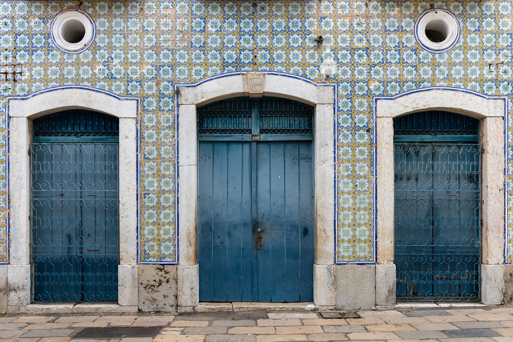

Al Kántara Media
Canal · YouTubePassaporte da Bíblia
Canal no YouTube com gravuras clássicas em cor de cinema e roteiro próprio.
Uso interno Conversar
Conversar
DIVISÃO 03 · CANAIS E AUDIÊNCIA
Canais próprios em nichos claros, com audiência real e medida. Para anunciantes que querem falar com quem importa, sem número inflado.
A PEDRA DO MEIO
Levamos longe. Marcas e anunciantes de nicho que querem audiência qualificada em vez de alcance vazio.

O QUE FAZEMOS
Produção contínua no YouTube e nas redes, com identidade e roteiro.
Integração editorial que respeita o canal e o público.
Cortes, Shorts e Reels que levam cada conteúdo mais longe.
Só número real, direto da plataforma.
MARCAS E PRODUTOS
COMO FUNCIONA
Escolha do nicho e da promessa editorial
Identidade e formato do canal
Produção e publicação em ritmo fixo
Medição e ajuste mensal
CASES
Canal no YouTube com gravuras clássicas em cor de cinema e roteiro próprio.
Uso internoCanal sobre poder e estratégia com identidade de retrato em preto e dourado.
Uso internoAL KÁNTARA MEDIA